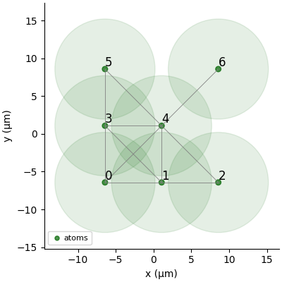
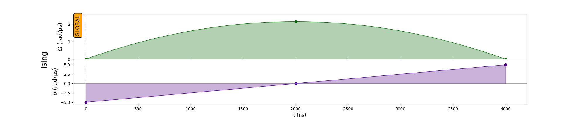
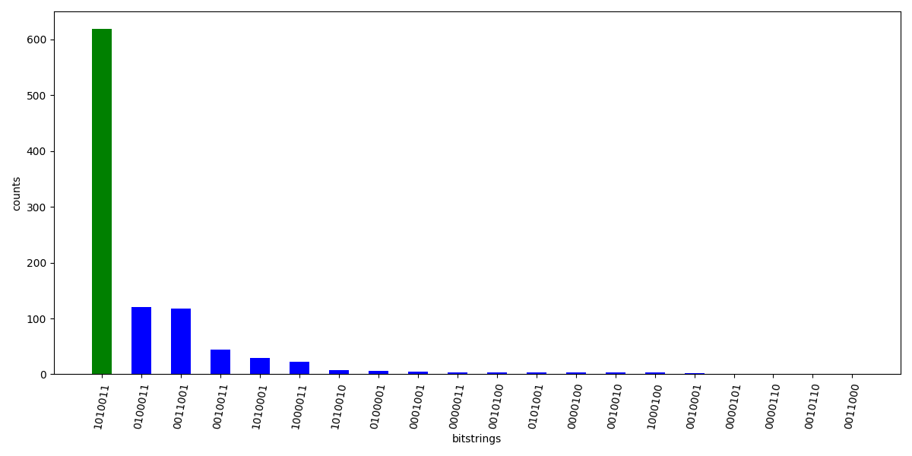
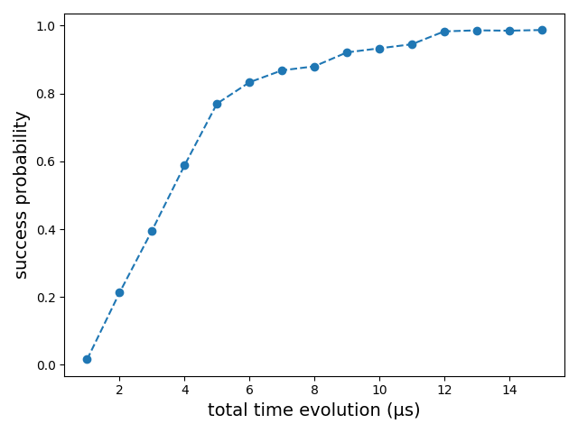

Recently, I participated in the The Blaise Pascal [re]Generative Quantum Challenge by Pasqal and got to learn about Pasqal’s neutral atom arrays and pulse-level programming as well as implementing quantum algorithms on an analog device. Here, I will share my learnings and in this blog particularly, we will solve the MIS problem with the quantum adiabatic algorithm using Pulser ( Citation: Henrique, Grijalva & al., Henrique, S., Grijalva, S., Henriet, L., Cornillot, A., AJDNIK, L., Karalekas, P. & et al. (n.d.). pasqal-io/Pulser: Release v0.15.3. Zenodo. Retrieved from https://github.com/pasqal-io/Pulser ) .
MIS as QUBO
An independent set (IS) of a graph is defined as a subset $S$ of nodes such that no two nodes in $S$ are adjacent. An IS is maximal if no node can be added to $S$ without violating IS. A maximum independent set (MIS) is one of maximum cardinality.
MIS can be represented as a QUBO problem. Every node of the graph $G = (V, E)$ is assigned with a binary variable $x_i$. If the $i^{th}$ vertex is present in the MIS then we assing $x_i = 1$ otherwise $x_i = 0$. The goal is to then minimize the below cost function
$$ C(x_1, x_2, \dots x_N) = - \sum_{i=1}^{N}x_i + U \sum_{(i,j) \in E} x_i x_j \tag{1} $$
where $N$ is the number of nodes in $G$. Selecting a node that belongs to MIS decreases the value of $C$ (first term) but since we don’t want two adjacent nodes to be in the MIS, we add a positive penalization (second term) with a penalty coefficient $U > 0$.
Analog Quantum Computing
The below expression represents the neutral atoms quantum computer globlal hamiltonian.
$$H_Q = \sum_{i=1}^N \frac{\hbar\Omega(t)}{2} \sigma_i^x - \sum_{i=1}^N \frac{\hbar \delta(t)}{2} \sigma_i^z+\sum_{j \lt i} \frac{C_6}{|\textbf{r}_i-\textbf{r}_j|^{6}}n_i n_j \tag{2} $$
We have three contributions here.
- The first contribution is controlled by the amplitude of the laser $\Omega$ (Rabi frequency).
- The second term is controlled by the detuning $\delta$ of the laser beam.
- The third term models the dipole-dipole interactions between pairs of atom.
The combined expression of the last two terms is similar to the cost function $C$. The idea is to encode the cost function in $H_Q$ and then find the ground state of the global hamiltonian by continuous manipulation of $\Omega(t)$ and $\delta(t)$.
But what about the first term and how will we find the ground state of $H_Q$? The next section answers these questions by describing the analog quantum algorithms framework.
Adiabatic evolution
In analog quantum computing, we consider a hamiltonian of the following form:
$$ H(t) = u(t) H_M + (1 - u(t)) H_C $$
where $H_C$ is the “cost” hamiltonian which encodes the optimization task that we are trying to solve. Here it is the MIS problem. $H_M$ is the “mixer” hamiltonian which encodes the quantum mixing (eg. a uniform transverse field on qubits) and $u(t) \in [0,1]$ is the control function.
The approach is to start with a hamiltonian $H_M$ whose ground state can be found easily. The system is set in the ground sate of $H_M$ at $t = 0, u(0) = 1$ and then slowly evolved, converging to the ground state of $H_C$ ($t = t_F, u(t_F) = 1$). At any time through the evolution, we will have a hamiltonian that is a linear combination of $H_M$ and $H_C$ controlled by $u(t)$.
We encode $H_C$ in the last two terms of $H_Q$ i.e. the problem hamiltonian and then $H_M$ will become the first term of $H_Q$ representing the mixer hamiltonian.
Quantum Adiabatic Theorem
Consider a time-varying Hamiltonian, $H(t)$, which is initially $H_M$ at $t = 0$, and subsequently $H_C$ at some later time, $t = t_F$ , then if the system is initially in the ground-state of $H_M$, and as long as the time-evolution of the Hamiltonian is sufficiently slow, the state is likely to remain in the ground-state throughout the evolution, therefore being in the ground-state of $H_C$ at $t = t_F$ ( Citation: Herbert, Herbert, S. (n.d.). Quantum Computing (CST Part II) Lecture 15: Adiabatic Quantum Computing. Retrieved from https://www.cl.cam.ac.uk/teaching/1920/QuantComp/Quantum_Computing_Lecture_15.pdf ) .
But how slow is sufficiently slow? Well, the proof ( Citation: Childs, Childs, A. (n.d.). Quantum algorithms (CO 781, Winter 2008): LECTURE 18: The quantum adiabatic theorem. Retrieved from https://www.cs.umd.edu/~amchilds/teaching/w08/l18.pdf ) is complex, however we will see it in pratice that if we do not give sufficient time for the evolution of $H(t)$, the probability of finding the ground state or in our case finding the MIS turns out to near zero.
Problem Formulation
We take a small graph with 7 nodes depicted below

Quantum Adiabatic Algorithm
In the beginning, we want to be in ground state of $H_M$ so $\delta (0) = 0$. Instead of the this we take $\Omega(0)=0, \delta(0)<0$. This will make the second term of (2) positive as $\delta(0) < 0$. The idea is to prepare the initial state of the system in the first half of the evolution. After the first half, we will have a superpostition of states that reproduces an independent set of various sizes. In the second half, we turn off $\Omega$ and turn on the detuning $\delta$ ending with $\Omega(0)=0, \delta>0$. If this evolution is slow enough, we are supposed to obtain a superpostion of states that can produce a maximal independent set. This can be achieved with the following pulse

Note the duration of pulse ($4 \mu$s). Simulation results into the following historgram of counts.

The bitstring with maximum counts is 1010011 which is indeed the MIS for the given graph. The set of nodes is $\{0, 2, 5, 6\}$.
Effect of time evolution on quality of MIS
We test with different time durations ranging from $1 - 15 \mu$s and observe the probability of successfully obtaining the MIS.

After a certain point (~ $12 \mu$s), we see that the success probability flattens out. This time duration is sufficiently large. A precise definition of sufficiently large can be found here ( Citation: Pesah, Pesah, A. (n.d.). Adiabatic Quantum Computing. Retrieved from https://arthurpesah.me/assets/pdf/introduction-quantum-annealing.pdf ) .
The code to reproduce the figures can be found here. A more general tutorial is available in the Pulser’s docs ( Citation: Pasqal, Pasqal, P. (n.d.). QAOA and QAA to solve a QUBO problem. Retrieved from https://pulser.readthedocs.io/en/stable/tutorials/qubo.html ) .
References
- Henrique, Grijalva, Henriet, Cornillot, AJDNIK, Karalekas & et al. (n.d.)
- Henrique, S., Grijalva, S., Henriet, L., Cornillot, A., AJDNIK, L., Karalekas, P. & et al. (n.d.). pasqal-io/Pulser: Release v0.15.3. Zenodo. Retrieved from https://github.com/pasqal-io/Pulser
- Pasqal (n.d.)
- Pasqal, P. (n.d.). QAOA and QAA to solve a QUBO problem. Retrieved from https://pulser.readthedocs.io/en/stable/tutorials/qubo.html
- Herbert (n.d.)
- Herbert, S. (n.d.). Quantum Computing (CST Part II) Lecture 15: Adiabatic Quantum Computing. Retrieved from https://www.cl.cam.ac.uk/teaching/1920/QuantComp/Quantum_Computing_Lecture_15.pdf
- Childs (n.d.)
- Childs, A. (n.d.). Quantum algorithms (CO 781, Winter 2008): LECTURE 18: The quantum adiabatic theorem. Retrieved from https://www.cs.umd.edu/~amchilds/teaching/w08/l18.pdf
- Pesah (n.d.)
- Pesah, A. (n.d.). Adiabatic Quantum Computing. Retrieved from https://arthurpesah.me/assets/pdf/introduction-quantum-annealing.pdf